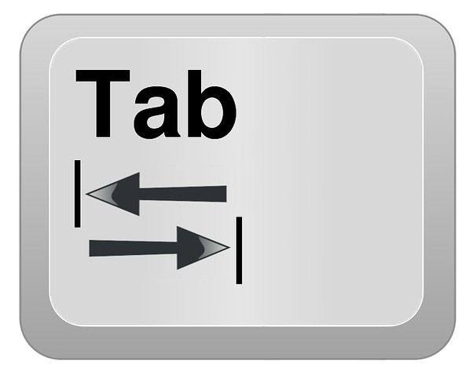
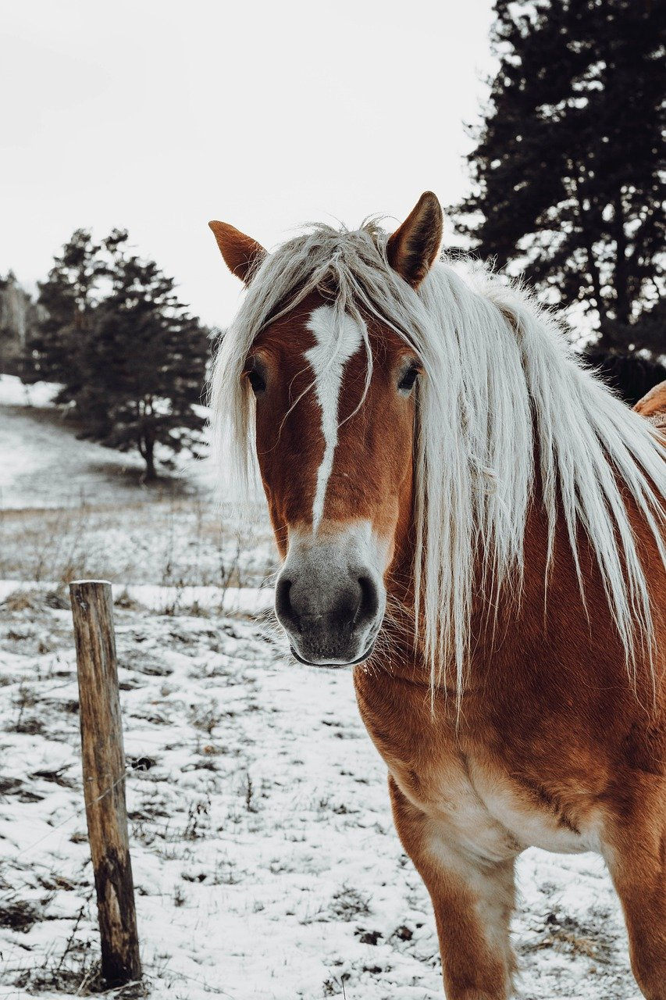
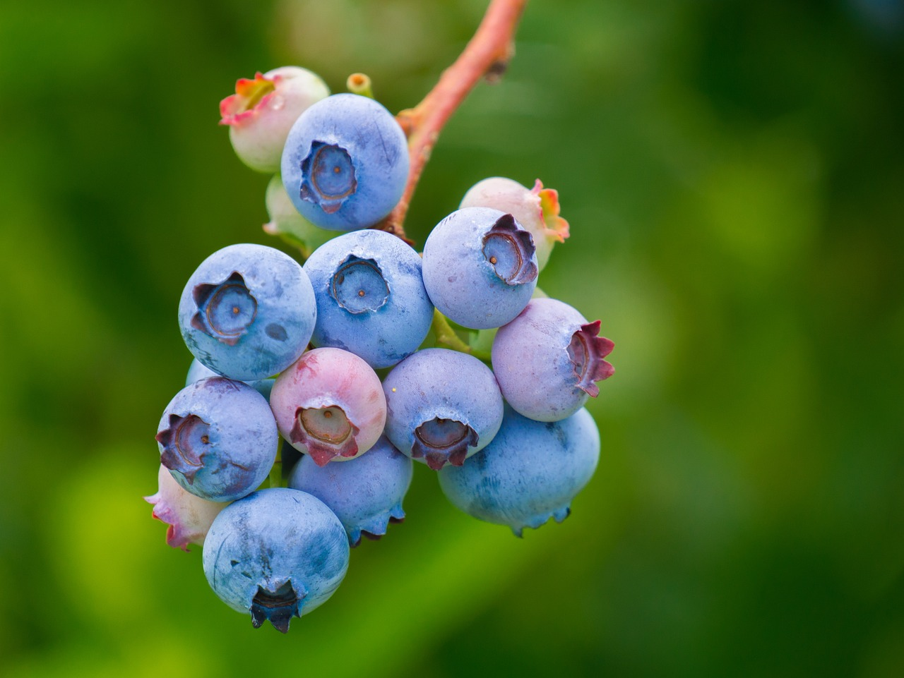

⠀⠀⠀⠀⠀⠀⠀⠀⠀⠀⠀⠀⠀⠀⠀⠀⠀⠀⠀⠀⠀⣄⠀⠀⠀⠀⠀⠀
⠀⠀⠀⠀⠀⠀⠀⠀⠀⠀⢀⣀⣤⣤⣄⠀⠀⠀⠀⠀⠀⣿⣆⠀⠀⠀⠀⠀
⠀⠀⠀⠀⠀⢀⣴⣿⣿⣿⣿⣿⣿⣿⣿⣿⣤⠀⠀⠀⠀⣿⣿⡄⠀⠀⠀⠀
⠀⠀⠀⠀⣠⡿⠿⠻⢿⣿⣿⣿⣿⣿⣿⣿⡇⠀⠀⠀⠀⢹⣿⡇⠀⠀⠀⠀
⠀⠀⠀⠀⣀⣤⣶⡀⠀⠻⢛⣿⣿⣿⣿⣿⡇⠀⠀⠀⠀⠈⣿⣷⠀⠀⠀⠀
⠀⠀⢠⣾⣿⣿⣿⣿⡦⣼⣯⣵⣿⣿⣿⣿⣷⣦⡀⠀⠀⠀⢹⣿⠀⠀⠀⠀
⠀⢠⣿⣿⣿⣿⣿⣿⡿⠿⢿⣿⣿⣿⣿⣿⡿⣿⣿⣦⣀⢀⡘⣿⡇⠀⠀⠀
⠀⣾⣿⣿⣿⣿⡟⠉⠀⠀⣾⣿⣿⣿⣿⠟⠁⠀⠉⠻⣿⣿⣿⣿⣧⣠⣶⠄
⢰⣿⣿⣿⡿⠋⠀⠀⠀⢀⣿⣿⣿⣿⣿⡀⠀⠀⠀⠀⠙⠻⣿⣿⣿⡟⠁⠀
⢸⣿⡿⠋⠀⠀⠀⠀⢠⣿⣿⣿⣿⣿⣿⣿⣄⠀⠀⠀⠀⠀⠀⠙⢻⡃⠀⠀
⠀⠁⠀⠀⠀⠀⠀⠀⣾⣿⣿⠿⣿⡿⢿⣿⣿⣆⠀⠀⠀⠀⠀⠀⠘⠃⠀⠀
⠀⠀⠀⠀⠀⠀⠀⢸⣿⣿⡇⠀⠀⠀⠀⠙⢿⣿⣶⣶⣤⠀⠀⠀⠀⠀⠀⠀
⠀⠀⠀⠀⠀⠀⠀⢻⣿⣿⡟⠀⠀⠀⠀⠀⠀⢸⣿⣿⣿⣧⠀⠀⠀⠀⠀⠀
⠀⠀⠀⠀⠀⠀⠀⠀⣻⣿⣿⠀⠀⠀⠀⠀⠀⠀⠉⢻⣿⣿⣇⠀⠀⠀⠀⠀
⠀⠀⠀⠀⠀⠀⢰⣾⣿⣿⠏⠀⠀⠀⠀⠀⠀⠀⠀⠀⢿⣿⣿⣦⠀⠀⠀⠀
⠀⠀⠀⠀⠀⠀⠈⠉⠉⠁⠀⠀⠀⠀⠀⠀⠀⠀⠀⠀⠘⠿⠿⠿⠀⠀⠀⠀
?
This website has a hidden link, try find & press it.
To encourage you to still check out the rest of this little practice website, checkout the random facts below. I've yet to reach the media queries section so I won't be implementing that here, future projects should look better with those :)
Random Facts

Clicking the very top of a page and then pressing tab runs through all its interactables.

A horse normally has more than one horsepower.

The Moon looks upside down in the Southern Hemisphere.

It's almost impossible to get too much sugar from fresh fruit.
"One must first be the link, to find the link. The random facts might help out as well though."